Which look would you play?
A tower defense game where you play a kid defending the playground from an army of living homework. The defenses are real playground equipment: seesaws, swings, the merry-go-round, tetherball and the sandbox. Here is the same schoolyard in four art styles.
Tell us: reply to whoever sent you this link with the number of the look you like best (1 to 4) and a word on why. These are mock-ups made with an image model, not game footage.
The same schoolyard in four looks
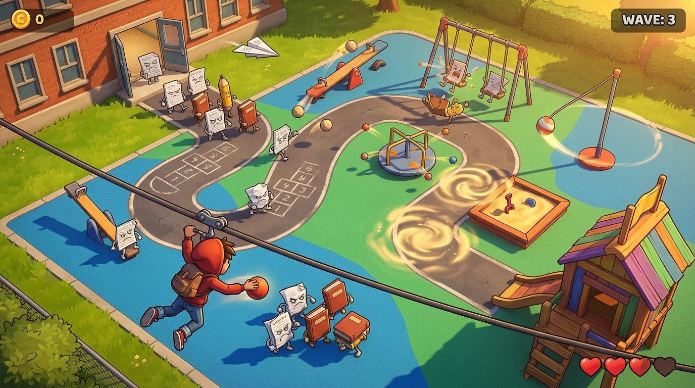
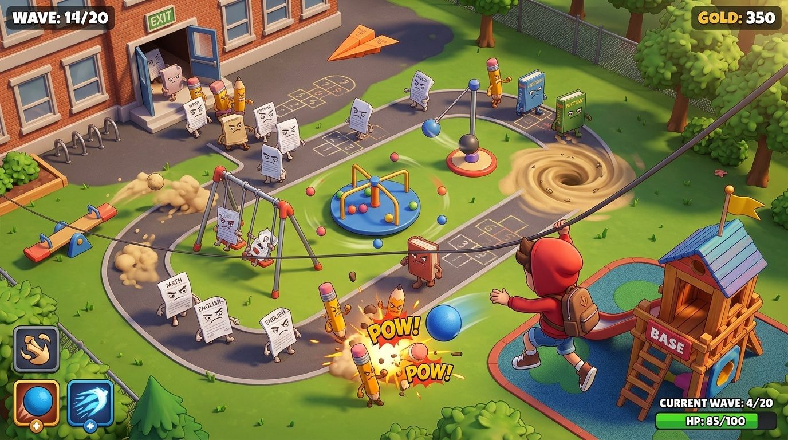
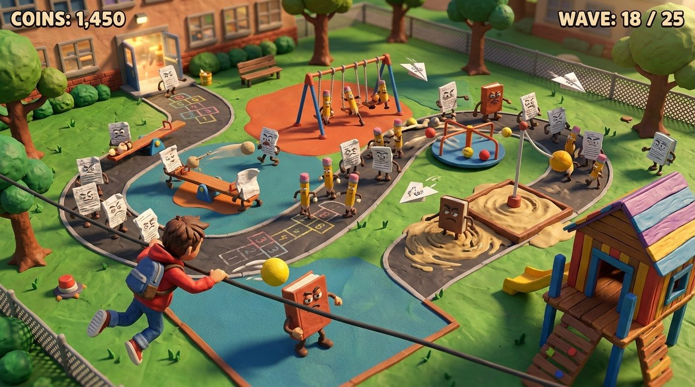
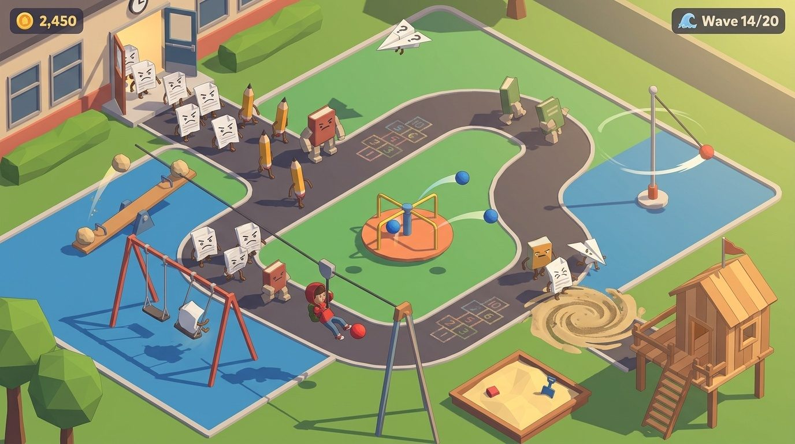
A second render of each look
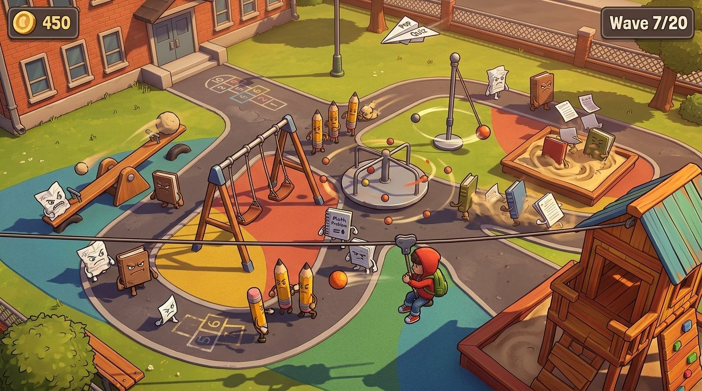
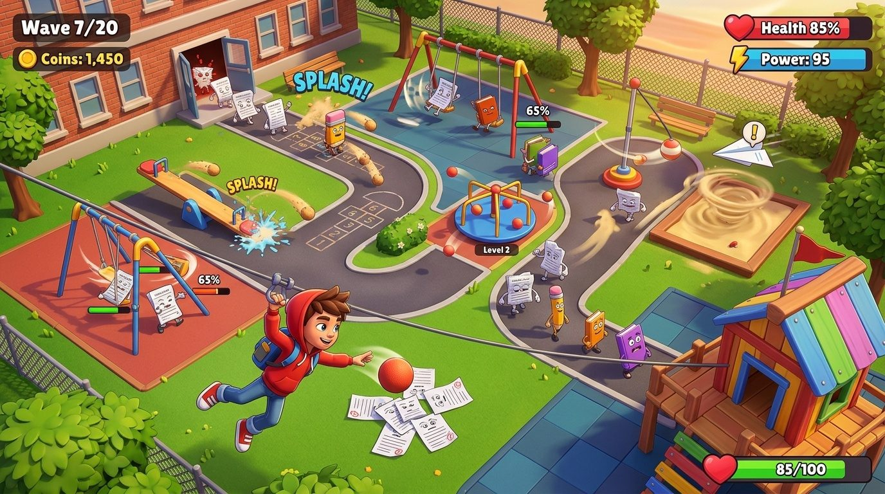
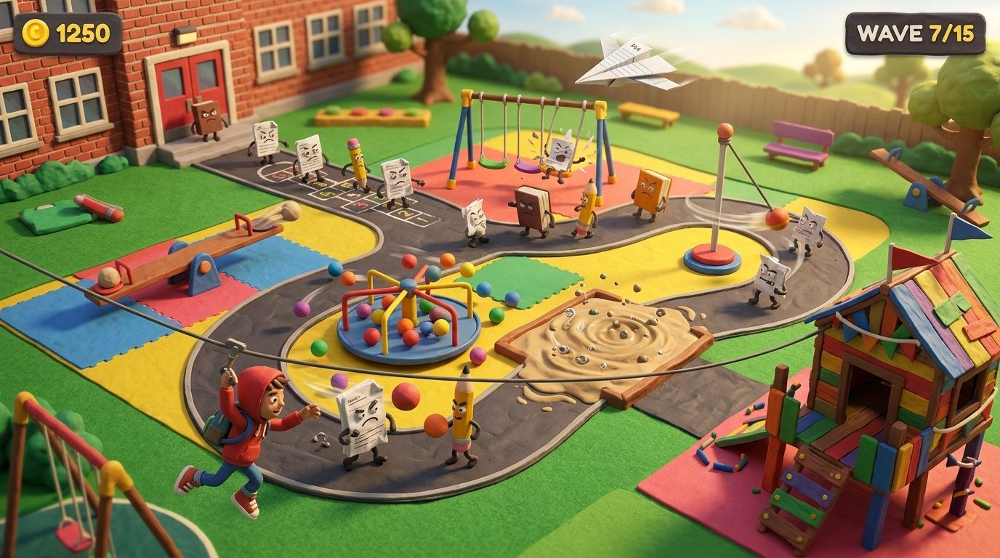
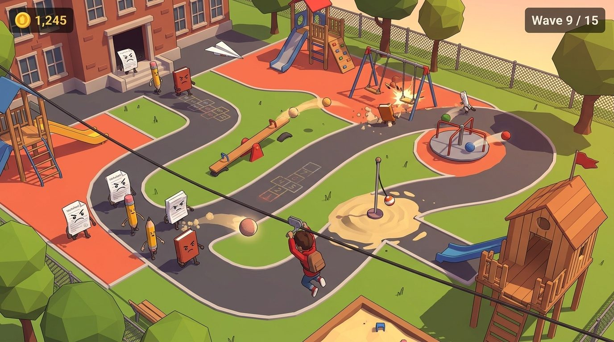
A closer look at the characters
The image model added cannons and spikes to some of the equipment. In the game the equipment stays real playground equipment, so judge the style, not the add-ons.
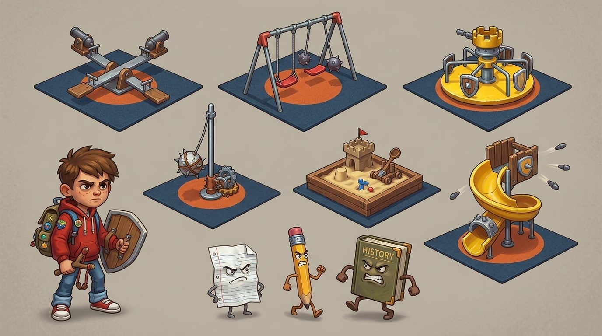
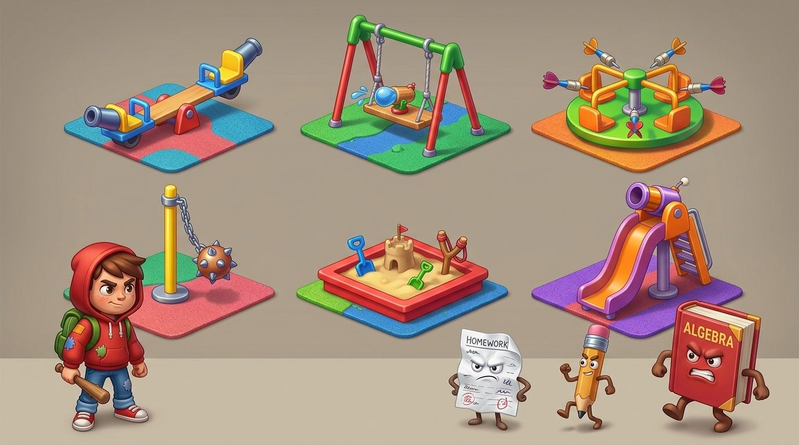
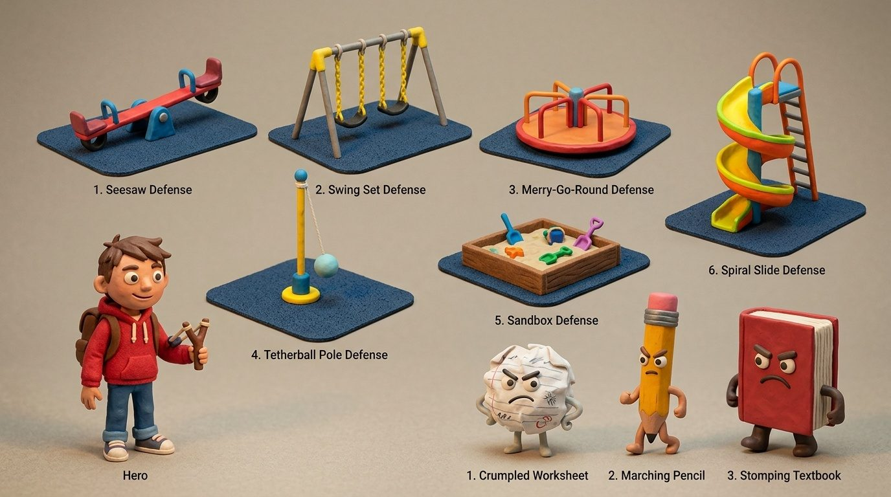
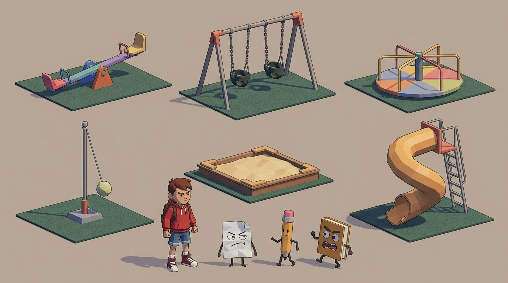
Mock-ups, September 2026.